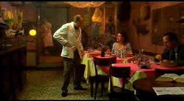

| Bread and Tulips/ B+, B+ |
| Columbia/2000/116/ANA
1.85/PS 1.33 |
It's a mid-life crisis with scrumptious
ingredients. Bread and Tulips features picturesque settings
dominated by romantic Venice. It's a solid script, but a lot of the
charm of Bread and Tulips is developed on the wonderfully
expressive face of star Licia Maglietta. She gives ordinary great
dignity and beauty.
Rosalba Barletta gets left behind at a road stop
while touring with her family. Rather than a disaster, Rosalba makes it
an opportunity. And opportunity to reexamine her life. She's an innocent
in many ways, but she has an adventurous spirit waiting to bolt free.Director
and co-writer Silvio Soldini creates Rosalba's character with great
warmth. I love the way she bumps into things and catches her clothing on
objects at virtually every opportunity. As the film progresses, Rosalba
develops grace and confidence along with her innocence.
 |
| A
little cafe in Venice. ©Columbia |
It's in Venice that Rosalba truly flowers. She
meets a man who helps to change her life as she helps to change his.
It's a wonderful symbiotic relationship.
Soldini directs with a sure hand. He knows
where he wants to go with the material and moves the story along at a
graceful pace. Rosalba's journey never feels artificial. It's part
actress, part director. Certainly, the editing marries with the
storytelling perfectly. Rosalba is seduced from moment to moment by her
experiences. She's like a blank page that attracts writing; she fills it
up very nicely.
Considering the beautiful settings Bread and
Tulips has to show off, I think Soldini is restrained in not making
this a tourist film; it's a film about people, love and character.
Sometimes some people are meant for each other is a message strong and
clear in Bread and Tulips. I guess the title Bread and
Tulips means that, yes, we need bread for sustenance, but we
need tulips too. We need romance in our lives. Soldini seems to be a
patient filmmaker. He finds a natural pace for the film without letting
it drag. It unfolds in some ways more rapidly as it goes along as
Rosalba's life changes. Yes, it oozes charm, but I never feel like I am
getting the sticky treatment.
Perhaps Bread and Tulips fails to
deliver at the same level of delight in the sub-plot of would-be
detective Constantino's pursuit of Rosalba; a little bit of it is good,
where it goes is good, but it slows down the strong romantic strain that
plays so well. The fantasy or hallucinatory moments that
Rosalba experiences are funny and entertaining, but I am not sure how
they mesh with the overall tone of the film; while they don't take me
out of it entirely, they do take some getting used to. But it's a
nice combination of characters in the film from Rosalba to Fernando to
Fermo to Grazia to Constantino.
Along with the beautiful ebullient perfromance of
Maglietta, the supporting cast amply enhanced the production. Giuseppe
Battiston is quite funny as plumber/detective Constantino. Bruno Ganz is
always a strong force in an off-beat romance and his tired waiter
Fernando Girasoli is no exception. Marina Massironi has an abundance of
good-natured energy as masseuse Grazia and Felice Andreasi adds humorous
sagacity as flower shop owner Fermo.
It's a colorful transfer, nicely rendered with
sharp detail. There's no edginess to the picture at all resulting in a
very film-like. Good black levels, grain is at a minimum and entirely
controlled. Good Shadow detail. Nice range of fleshtones. Fine details
and shadings are nicely delivered. Yellow English subtitles are easy to
read. Attractive surround tracks. Overall this is a very attractive
DVD. |
|
|
|

To Kill a Mockingbird (SE)/ A,A

From the great novel by Harper Lee, this tale of growing up
in the 1930s South is splendidly evocative of place and period. Gregory
Peck is splendid. Direction impeccable.

The
Movie Poster Archive includes extensive poster images from the films of
stars like Susan Hayward, Kirk Douglas, Katharine Hepburn and many
more. Our featured star is Susan Hayward

 Have you visited Home Theater
Talk lately? One of the friendliest places on the Net for
Home Theater and DVD discussion, you can get help for installation
problems or simply share your opinions with other Vidiots. Have you visited Home Theater
Talk lately? One of the friendliest places on the Net for
Home Theater and DVD discussion, you can get help for installation
problems or simply share your opinions with other Vidiots.
 Kinoeye
Archive Kinoeye
Archive
This is a resource of all content-rich materials on the web
relating to Central and East European cinema. The ultimate aim of the
Kinoeye Archive is to provide a near-as-damn-it definitive index of
intelligent and thoughtful English-language analysis of Central and
Eastern European cinema on the web.
MRQE
Find reams of movie and DVD reviews at the Movie Review Query
Engine, a index of reviews appearing on the Internet.
 Sight
and Sound Magazine is the venerable voice of The British Film Institute.
The site includes articles and film reviews. A great resource in print
and on the Internet. Sight
and Sound Magazine is the venerable voice of The British Film Institute.
The site includes articles and film reviews. A great resource in print
and on the Internet.

Looking for information about widescreen movies and hardware.
The
Widescreen Movie Center is the place to go.
|